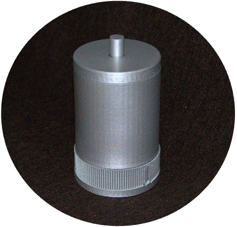
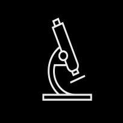
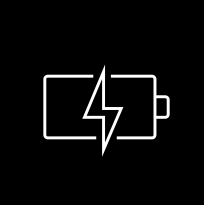
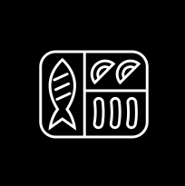

Unser aktives Feder-Dämpfungs-System mit Beschleunigungsausgleich-Technologie sorgt für maximalen Schutz während des medizinischen Transports – auf Straße und in der Luft. Stöße und Vibrationen werden minimiert, selbst die empfindlichsten Patienten sind geschützt.

Innovative DeepTech für die sichere Bewegung von Patienten.
Offizieller Produktstart in Kürze.
Magnetische Funktion
Magnetische Aufhängung sorgt für stabile Positionierung, unabhängig vom Fahrstil, entlastet das Personal und ermöglicht volle Konzentration auf den Patienten.
Modular & Skalierbar
Integration als Zusatzmodul in bestehende Systeme, funktioniert fahrzeugunabhängig und schützt Patienten auch außerhalb des Fahrzeugs.
KI-basierte Spitzenleistung
Echtzeit-Beschleunigungsausgleich gesteuert durch KI reagiert zuverlässig auch bei Turbulenzen oder schlechten Straßenbedingungen.
99,9 % Kompensation
Hochfrequente Vibrationen werden nahezu vollständig neutralisiert für maximale Sicherheit während kritischer Transporte.
Der Transport empfindlicher Patienten kann gefährlich sein.
Details zu Risiken und Statistiken:
Von der Neonatologie bis zur Notfallmedizin – unser System sorgt für vibrationsfreien Transport, schützt Patienten und unterstützt das Personal.
Über 60.000 Frühgeburten pro Jahr in Deutschland. Bis zu 30 % riskieren Gehirnblutungen – oft verschärft durch Transport. Schon eine vermiedene Blutung kann bis zu 250.000 € sparen.
Bei Aortendissektionen, Frakturen oder Traumata können schon kleine Stöße ernsthafte Risiken darstellen. Unser System minimiert Erschütterungen – vom Straßenrand bis zum Hubschrauber.
Wir messen Vibrationen live – für datenbasierte Pflegeverbesserungen und klinische Studien. Das macht unsere Lösung therapeutisch, präventiv und forschungsorientiert.
59,5 % der EMTs berichten von belastungsbedingten Problemen. Unser System entlastet das Personal, erhöht Fokus und reduziert Burnout. Viele Rettungsdienste unterstützen uns daher mit Absichtserklärungen und Kooperationen.
Verschiedene Studien und Leitlinien berichten über einen Zusammenhang zwischen Neonataltransport und erhöhten Komplikations- sowie Sterblichkeitsraten. In der Notfallversorgung Erwachsener, obwohl qualitativ hochwertige Daten begrenzt sind, wird mechanischer Stress zunehmend – basierend auf physiologischen Überlegungen und Expertenmeinung – als relevanter Faktor für Patientenkomfort, Schmerzniveau und die allgemeine Stabilität der Behandlung angesehen.
Die meisten Beobachtungsstudien zeigen, dass Frühgeborene, die postnatal transportiert wurden, eine höhere Inzidenz schwerer Gehirnblutungen (Grad 2–4) aufwiesen. Dies unterstreicht die potenzielle Rolle des Transports als kritischen Risikofaktor in den ersten Lebenstagen – insbesondere bei instabilen und unreifen Neugeborenen.
Unabhängig vom Transportmittel (Boden oder Luft) werden Neugeborene während des Transports hohen Pegeln von Lärm, Vibration und Beschleunigung ausgesetzt. Hubschrauber- oder Flugzeugtransporte bieten den Vorteil, dass ein spezialisiertes Team schneller vor Ort ist und die Transportzeit insgesamt verkürzt wird, können aber gleichzeitig zu erhöhter Lärmbelastung und Beschleunigungsstress führen. Zudem kann ein Abfall des Kabinendrucks die Atemsituation verschlechtern; eine kleine Beobachtungsstudie zeigte reduzierte zerebrale Sauerstoffsättigung bei einigen Neugeborenen.
Verschiedene Matratzen wurden für den Inkubatoren-Transport getestet, wobei Gelmatratzen die wenigsten Vibrationen übertragen. Aufgrund der begrenzten Literatur kann jedoch keine definitive Empfehlung ausgesprochen werden. Gelmatratzen können zudem im Falle eines Unfalls aufgrund ihres Gewichts ein höheres Verletzungsrisiko darstellen.
Da Lärm und Vibration bei Neugeborenen während des Transports Stress auslösen können – was die Herzfrequenz beeinflusst – wird empfohlen, die Lärmbelastung zu reduzieren und Gehörschutz für Neugeborene und Frühgeborene sicherzustellen.
Ein retrospektiver Blick zeigt, dass Fahrzeug- und Tragensysteme in den letzten 50 Jahren deutlich verbessert wurden – moderne Systeme übertragen deutlich weniger Vibration als ältere.
Dennoch bleibt die Transportumgebung besonders aufgrund von Beschleunigung, Bremsen sowie Start- und Landevorgängen hochstressig.
Hersteller haben versucht, Inkubatoren anzupassen, um Lärm, Licht und Temperaturschwankungen zu reduzieren – aber die Reduktion von Vibrationen während des Transports bleibt eine ungelöste Herausforderung.
In den USA finden jährlich über 68.000 Transporte zu spezialisierten neonatologischen Intensivstationen statt – in Kanada etwa 5.000. Ca. 15% der Geburten erfolgen in Krankenhäusern ohne geeignete Neonatalversorgung. Der Transport zu Zentren mit Intensivpflege ist daher oft lebensrettend – stellt aber gleichzeitig eine physiologisch und logistisch hoch anspruchsvolle Phase dar.
Vibrationen können Vitalwerte destabilisieren und Überwachung sowie Behandlung erschweren – insbesondere in Notfallsituationen.
Bailey et al. (2019) testeten verschiedene Matratzenkonfigurationen für den Bodentransport, darunter:
Die Leitlinie besagt ausdrücklich: „Der Transport sollte so sanft wie möglich und schmerzfrei erfolgen.“ Dies gilt insbesondere bei instabilen Becken- oder Wirbelsäulenverletzungen, um Sekundärschäden zu vermeiden. Die Empfehlung wurde 2022 überprüft und hat GPP-Status (Good Practice Point).
Die S3 Leitlinie (AWMF 187-023) empfiehlt: „Jede Extremität, bei der eine Verletzung vermutet wird, sollte vor größeren Bewegungen oder Transporten immobilisiert werden.“ Dies hilft, Schmerzen, Sekundärverletzungen und neurologische Verschlechterung zu verhindern. Die Empfehlung trägt den Grad B ⇑ bei einer Konsensstärke von 94%.
Laut Leitlinie: „Schmerz und der damit verbundene emotionale Stress können den Blutdruck weiter erhöhen und zur Progression der Aortendissektion beitragen.“ Dies unterstreicht die Notwendigkeit einer ruhigen, vibrationsarmen Lagerung, um Patienten stabil zu halten und das Risiko einer Verschlechterung zu reduzieren.
Die Studie zeigt, dass viele während des Rettungstransports auftretende Vibrationen in Frequenzbereiche fallen, die besonders empfindlich für Kopf, Abdomen und Wirbelsäule sind. Dies kann physiologischen Stress auslösen und die Patientensicherheit beeinträchtigen. Die Autoren betonen, dass verbesserte Tragen mit geeigneter Dämpfung die übertragenen Vibrationspegel deutlich reduzieren können.
Internationale Leitlinien, z.B. der European Society of Cardiology und das CHEST Journal, betonen die Bedeutung der präklinischen Stabilisierung bei Lungenembolie:
Sauerstoffgabe, Antikoagulation, ggf. Lysetherapie und enge Überwachung hämodynamischer Parameter.
Zwar wird eine vibrationsarme oder immobilisierende Lagerung nicht explizit empfohlen, kann aber bei instabilen Patienten sinnvoll sein, um weiteren kardialen Stress oder unerwünschte Reaktionen zu vermeiden.
Claramonte et al. (2024) dokumentierten signifikante physiologische Stressmarker in einer Studie mit 27 Rettungsfachkräften nach realen Notfalleinsätzen.
Neben erhöhtem Blutdruck und Herzfrequenz zeigte sich eine deutliche Erhöhung der Speichelamylase – ein verlässlicher Marker für akuten psychosomatischen Stress.
Quelle: Claramonte et al. (2024) – PubMed
Schmidt et al. (2023) führten eine bundesweite Onlinebefragung mit über 900 Rettungsfachkräften durch.
Die Ergebnisse zeigen anhaltende mentale Belastung, insbesondere durch komplexe Fälle, Verantwortung für instabile Patienten, physische Belastung durch Vibrationen und Zeitdruck während des Transports.
Quelle: Schmidt et al. (2023), Notfall + Rettungsmedizin
Die AWMF-Leitlinie zur Aortendissektion (Typ B) betont: „Schmerz und der damit verbundene emotionale Stress können den Blutdruck weiter erhöhen und so zur Progression der Dissektion beitragen.“
Eine ruhige, vibrationsarme Lagerung ist essenziell.
Die tatsächliche Zahl der Fälle ist wahrscheinlich unterschätzt: Autopsiestudien zeigen, dass bis zu 50% der Aortendissektionen in Notaufnahmen unentdeckt bleiben.
AWMF 004‑034, 2022
Quelle: Ärzteblatt
Quelle: DGK
Quelle: BDC
Quelle: UK Regensburg
Quelle: RBB Praxis
Während mehrere Studien zeigen, dass Neonataltransporte mit erhöhten Risiken für Komplikationen und Sterblichkeit verbunden sind, bleibt der direkte kausale Zusammenhang zwischen mechanischem Stress (z. B. Vibration, Beschleunigung, Lärm) und klinischen Outcomes unzureichend verstanden.
Dennoch deutet die Evidenz darauf hin, dass akuter Stress – ausgelöst z. B. durch instabile Lagerung – den Verlauf vulnerabler Zustände verschlechtern kann, insbesondere bei instabilen Patienten. Berichte von Rettungskräften und Ärzten stützen diese Einschätzung.
Muniqo Performante ermöglicht erstmals die kontinuierliche Messung mechanischer Belastungen an Patienten über den gesamten Notfallpfad hinweg. Dies legt die Grundlage für medizinische Evidenz, die kausale Zusammenhänge aufzeigen und gezielte Verbesserungen im Patiententransport unterstützen kann.
Diese Technologie kann eine Schlüsselrolle bei vibrationsarmen Neonataltransporten spielen – und so das Risiko von Gehirnblutungen bei extrem frühgeborenen Säuglingen verringern. Ein zuverlässiges System wie dieses wird dringend benötigt.
— Leitender Neonatologe an einem großen Universitätsklinikum in Deutschland
Diese Aussage spiegelt ein wiederkehrendes Anliegen wider, das wir in mehreren Experteninterviews an führenden Kliniken gehört haben. Viele Fachärzte betonten die Notwendigkeit einer Nachrüstlösung, die den höchsten medizinischen Standards entspricht.
Wenn Sie mehr erfahren oder sich austauschen möchten, können Sie gerne Kontakt aufnehmen.
Wir tun, wozu die Wissenschaft schon lange aufruft.
In Zusammenarbeit mit MedCareVisions, der Feuerwehr München, dem Deutschen Herzzentrum und der TUM führten wir eine realistische Simulation eines Neonatentransports durch, inklusive Patientenübergabe, Inkubatortransfer, Beladung des Rettungswagens und einer Route durch das Münchner Stadtzentrum.
Die Feuerwehr setzte einen vollwertigen Transportinkubator und eine Frühchenpuppe ein, bereitgestellt von MedCareVisions. Im Krankenhaus führten geschulte Notfallkräfte Transfers über Treppen, Schwellen und Rampen unter realistischen Notfallbedingungen durch.
Dieses Pilotprojekt ermöglichte eine der ersten kontinuierlichen Echtzeit-Vibrationsaufzeichnungen während eines kompletten Neonatentransports. Signifikante dynamische Kräfte wurden auf allen Achsen gemessen, mit dominanten Spitzen in der kritischen vertikalen Z-Achse, die als besonders schädlich für Frühgeborene bekannt ist.
Unsere Daten bestätigen frühere wissenschaftliche Erkenntnisse und zeigen zusätzlich, dass die Kraftwerte in bestimmten Situationen etablierte Sicherheitsgrenzen deutlich überschreiten können.
Besonders kritische Phasen umfassten die Beladung des Rettungswagens, plötzliche Geschwindigkeitsänderungen und Transporte über unebenes Gelände.
Die simulierte Route führte durch vibrationssensiblen Umgebungen wie Ladezonen für Rettungswagen, Kopfsteinpflasterstraßen, schnelle Straßenabschnitte sowie unebene Flächen, einschließlich Baustellen und beschädigtem Asphalt.



Vibrationen können die Präzision sensibler Messungen beeinträchtigen, was zu ungenauen Daten und kompromittierten Ergebnissen führt.
Vibrationen können Bauteile abnutzen, die Stabilität von Geräten beeinträchtigen und während kritischer Operationen zu Fehlfunktionen führen.

Vibrationen können die Produktionslinie stören und die Qualität der Batteriezellen beeinträchtigen, was zu verkürzter Lebensdauer oder Sicherheitsrisiken führt.
Vibrationen können die Präzision von Quantencomputern stören und die Effektivität sensibler Operationen verringern.

Vibrationen können empfindliche Güter beschädigen und zu Kontamination oder Sicherheitsrisiken beim Transport von Gefahrstoffen oder leicht verderblichen Lebensmitteln führen.
Mit unserer universellen Lösung steigern wir die Leistung jedes Systems. Wir bieten zudem volle Anpassung an Ihre spezifischen Anforderungen und Wünsche. Dazu gehört die präzise Vibrationsmessung, um Ihre Kontrolle zu verbessern und optimale Ergebnisse zu erzielen.